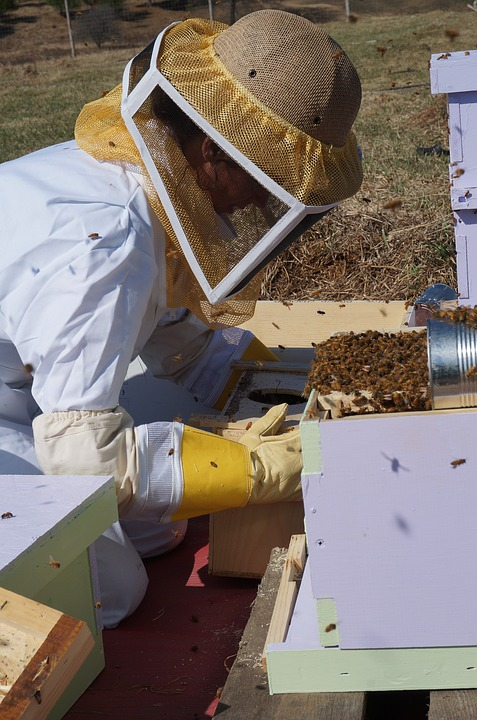
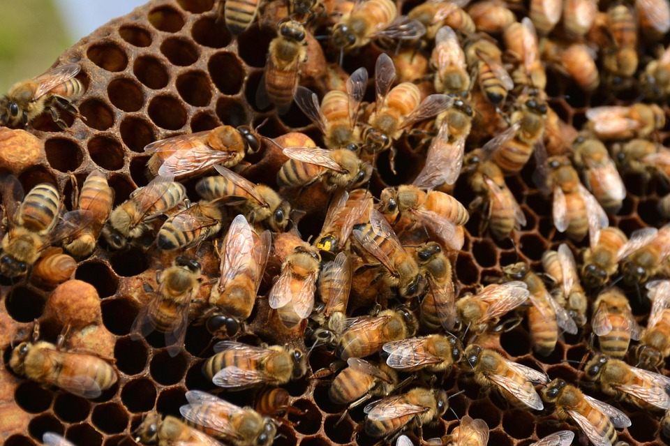
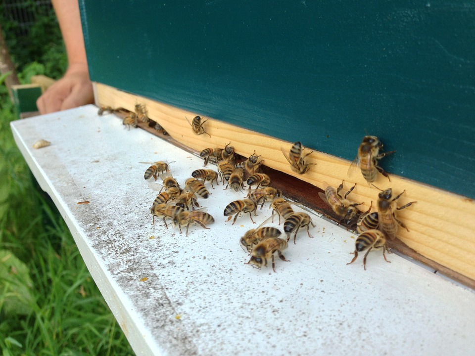
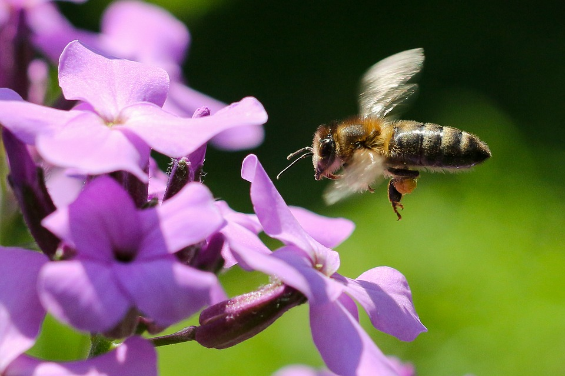

Догляд за бджолами ранньою весною
Бджолосім'ї по-різному переносять зимівлю, і перший їхній обліт багато про що може «розповісти»
уважному
пасічнику.
Хороший обліт бджіл свідчить про гарний стан сім'ї,
а от поганий обліт або його
повна відсутність є приводом для занепокоєння.

Причин такої поведінки бджіл може бути кілька:
- під час зимівлі бджолосім'я загинула;
- льоток у вулику забився мором (мертвими бджолами, що впали на дно вулика);
- бджолина сім'я з будь-яких причин послабшала за зимовий період.
Перший огляд бджолиних сімей
- Під час нестійкої холодної погоди на вулиці вулик не рекомендується відкривати.
Досить очистити
льоток від мору та
послухати сім'ю.
- Коли повітря прогріється до 8-10 градусів Цельсія - можна ненадовго відкрити вулик і провести
огляд.
Насамперед
необхідно оцінити кормові запаси й наявність матки в сім'ї. Якщо помічений розплід, то про
наявність
матки можна не
турбуватися. Зараз головне, що матка є, а якої вона якості з'ясується
трохи пізніше. Тривалими
діями
в холодну погоду
можна нанести шкоду розплоду
- Якщо недостатньо корму для сім'ї або його якість погана, наприклад, коли мед зацукрився,
необхідна
підгодівля, тому що
бджоли не можуть харчуватися зацукрованим медом. Підгодівля може бути будь-якою, частіше за все
для
цього
використовується сироп. Багато бджолярів проводять підгодівлю повністю всім сім'ям, стимулюючи у
такий спосіб матку для
більшої кладки яєць.
- Важливо приділити увагу подушці, вологі слід замінити. Можна під полотно покласти газету, вона
позитивно позначається на
розвитку сім'ї, особливо потрібно це зробити для слабких сімей.
Після проведення першого огляду готується суш, рамки з вощиною й додаткові корпуси (для тих, хто
користується
багатокорпусними вуликами).

Ранньою весною не рекомендується часто заглядати в сім'ю. Тому що на вулиці ще досить холодно й води
немає (а якщо і є,
то дуже холодна). Бджіл потрібно забезпечувати теплою водою. Це відіграє важливу роль у процесі
розвитку
сім'ї.
Варіантів бджолиних поїлок із підігрівом дуже багато, можна пошукати в інтернет-магазині товари для
бджолярів.
Другий огляд бджолиних сімей
- Другий огляд проводиться теплим днем, коли температура в тіні
становить
не нижче 15-16 градусів
Цельсія.
- Зараз потрібно подивитися кількість, а також якість бджолиного
розплоду.
Якість матки можна
визначити за щільністю
засіву, якщо на рамці з розплодом є великі пропуски, або розплоду
занадто мало, то матку
необхідно
замінити.
- Якщо на пасіці виявлено багато слабких бджолиних сімей, то найкращим
варіантом буде об'єднання
двох
або трьох слабких
сімей в одну. При цьому залишається наймолодша та якісна матка. Від такої бджолиної
сім'ї можна
отримати більше меду,
ніж від двох слабких.

Зазвичай, коли температура повітря прогрівається до 12 градусів Цельсія, вулики із зимівника
починають
виносити на
точок, де з усією увагою спостерігають за поведінкою бджіл.
Бджолині будиночки закривають льотковими загородженнями. Робиться це для того, щоби під час першого
обльоту не стався
зліт бджіл, що нерідко призводить до значного посилення одних родин і природного ослаблення інших.
Найчастіше льотки
відкривають через вулик. Коли перша частина бджолиних сімей здійснить свій перший обліт,
відкриваються
інші вулики.
Уважно спостерігаючи за бджолами під час першого весняного обльоту, бджоляр може з'ясувати, як
перезимували бджолині
сім'ї та зробити відповідні висновки.
Як надати допомогу бджолиній сім'ї, яка перезимувала несприятливо?
- Якщо бджолосім'я голодує, потрібно поповнити запаси кормів.
- Якщо рамки забруднені слідами проносу або неякісним кормом (кристалізувався, закислий мед), їх
видаляють із вулика.
Замість них ставлять стільники з теплим цукровим сиропом.
- Якщо точно встановлено, що сім'я безматочна, то робляться такі дії:
- слабку бджолину сім'ю приєднують до такої ж слабкої сім'ї або ж до нуклеуса;
- до середньої сім'ї бджіл приєднують нуклеус із маткою і бджолами;
- до сильної безматочної сім'ї підсаджують тільки матку, без нуклеуса.

Основний догляд за бджолами ранньою весною полягає в підгодівлі бджіл і, звісно ж, в
утепленні гнізд, це дає хороший
поштовх у розвитку сімей. Бджіл підгодовують якісним медом або підігрітим до теплого стану
цукровим
сиропом.
Що
стосується утеплення, то гнізда зверху та з боків утеплюють подушками або матами, а льоток розкривають
спочатку на 1-3
см, поступово розширюючи його з настанням теплої погоди.
тільда, нарешті осилив її!!